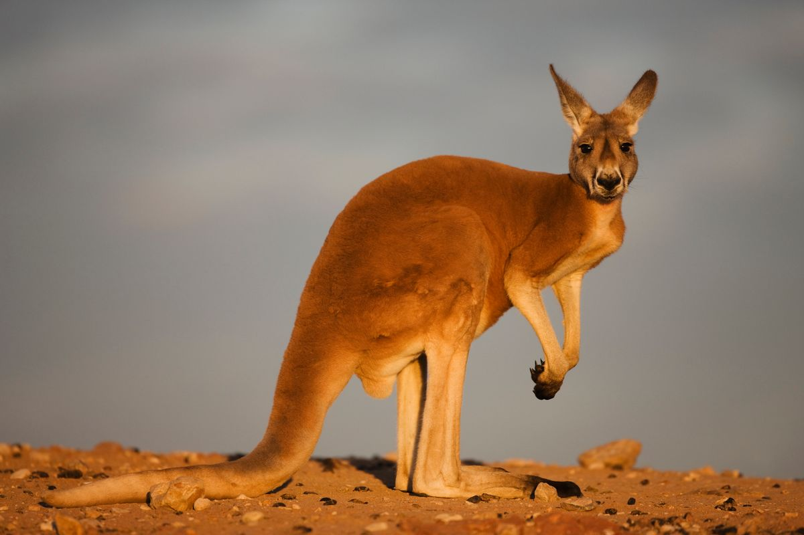
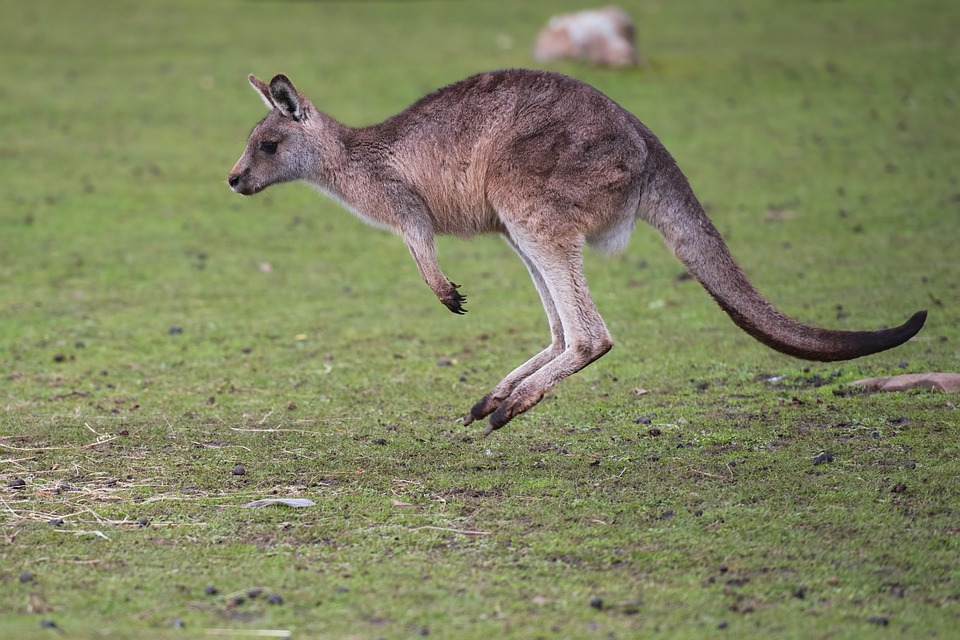

We can directly link to images which are already hosted on the internet:
We can also use the img tag to display gifs

We should probably use our own images so that we have more control!
 I can use videos links hosted online within a video tag: